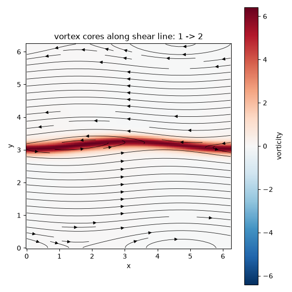

Note
Go to the end to download the full example code.
Roll-up of a shear layer into vortex cores#
Helmholtz (1868) and Kelvin (1871) showed that any interface between two
fluid layers sliding past each other is unconditionally unstable: the shear
itself supplies the energy to grow a small ripple, with no velocity
threshold required. kelvin_helmholtz_ic()
seeds exactly this thin, rippled shear layer as a vorticity field on a
doubly periodic domain, and
NavierStokes2D evolves it
by integrating the 2D incompressible vorticity-transport equation
(velocity recovered from the streamfunction, \(\nabla^2\psi=-\omega\), \(\mathbf{u}=(\partial_y\psi,\,-\partial_x\psi)\)) through the roll-up – from a single smooth ripple to several discrete “cat’s eye” vortex cores – while the idealized vortex-sheet linear theory,
(kelvin_helmholtz_growth_rate()),
predicts how fast a perturbation of wavenumber \(k\) should grow, for a
velocity jump \(\Delta u\) across the layer, before it does.
import matplotlib.pyplot as plt
import numpy as np
from scipy.signal import find_peaks
from physicskit.fluids.systems.instabilities import kelvin_helmholtz_growth_rate, kelvin_helmholtz_ic
from physicskit.fluids.systems.navier_stokes import NavierStokes2D
from physicskit.fluids.visualizers.flow_fields import animate_kelvin_helmholtz, plot_vorticity_field
A thin vortex sheet with a small sinusoidal ripple seed#
n, length = 128, 2 * np.pi
shear_width, amplitude = 0.15, 0.1
omega0 = kelvin_helmholtz_ic(n, length, shear_width=shear_width, perturbation_amplitude=amplitude)
solver = NavierStokes2D(n=n, length=length, nu=0.0005)
Early-time growth versus the linear prediction#
The idealized vortex-sheet growth-rate law predicts \(\sigma = k\,\Delta u/2\) for a perturbation of wavenumber k (the shear jump here is \(\Delta u \approx 2\), the tanh profile’s asymptotic jump); it is a lower bound for this finite-thickness layer, whose fastest-growing wavelength is comparable to the shear width itself (Michalke, 1964) rather than to the domain-scale fundamental mode used below, so the measured RMS growth – fed by that shorter, faster-growing wavelength – comes out several times higher than the fundamental-mode estimate.
k0 = 2 * np.pi / length
sigma_predicted = kelvin_helmholtz_growth_rate(k=k0, delta_u=2.0)
omega = omega0.copy()
amps, times = [], []
dt, chunk = 0.002, 25
for i in range(8):
omega = solver.simulate(omega, dt=dt, steps=chunk)["omega"]
dev = omega - omega.mean(axis=0, keepdims=True)
amps.append(np.sqrt(np.mean(dev**2)))
times.append((i + 1) * dt * chunk)
amps, times = np.array(amps), np.array(times)
sigma_measured = np.polyfit(times[:4], np.log(amps[:4]), 1)[0]
print(f"fundamental-mode lower bound: sigma = {sigma_predicted:.3f}; measured early-time RMS growth rate = {sigma_measured:.3f}")
fundamental-mode lower bound: sigma = 1.000; measured early-time RMS growth rate = 3.943
Full nonlinear roll-up#
Continuing well past the linear regime rolls the sheet up into discrete “cat’s eye” vortex cores – counting peaks along the (former) shear line makes the roll-up quantitative, not just visual.
for _ in range(20):
omega = solver.simulate(omega, dt=dt, steps=chunk)["omega"]
row0 = omega0[:, n // 2]
rowf = omega[:, n // 2]
peaks0, _ = find_peaks(row0)
peaksf, _ = find_peaks(rowf)
u, v = solver.velocity(omega)
fig, ax = plot_vorticity_field(solver.X, solver.Y, omega, u, v)
ax.set_title(f"vortex cores along shear line: {len(peaks0)} -> {len(peaksf)}")
fig.tight_layout()
plt.show()

2" class = "sphx-glr-single-img"/>Watching the roll-up happen, continuously#
Rather than a single before/after comparison, redrawing the vorticity field every few RK4 steps shows the ripple rolling up into discrete “cat’s eye” vortex cores as it happens.
Check#
The shear layer is unstable: it grows at least at the fundamental mode’s vortex-sheet rate k dU / 2 and rolls up into vortex cores.
assert abs(sigma_predicted - k0 * 2.0 / 2) < 1e-12
assert sigma_measured > sigma_predicted
assert len(peaksf) > len(peaks0)
Total running time of the script: (0 minutes 11.070 seconds)